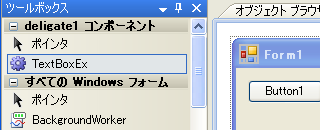
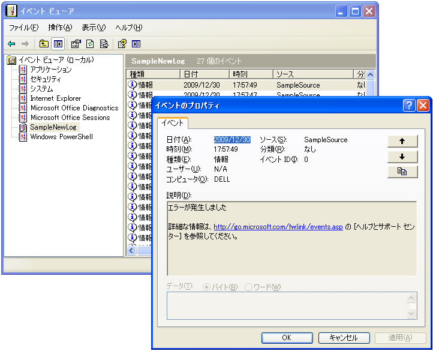
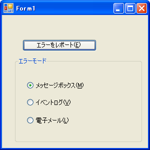
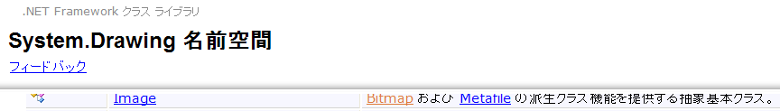

■イミィディエイトウィンドウのクリヤ
>cls
■イミディエイトウィンドウからフォームのコードをテストする
?(New form1).Textbox1.name
"TextBox1"
■スペシャルフォルダーの取得
?Environment.GetFolderPath(Environment.SpecialFolder.Desktop)
"C:\Documents and Settings\やま\デスクトップ"
■一時フォルダの取得
System.IO.Path.GetTempPath()
■システムフォルダーの取得
Dim sysdir As String = _
System.Environment.GetFolderPath( _
System.Environment.SpecialFolder.System)
MsgBox("System.Environment.SpecialFolder.Systemのパスは " & sysdir, MsgBoxStyle.Information, "TitleTest")
■自プログラムのフルパスを取得
?system.Windows.Forms.Application.StartupPath
"C:\Documents and Settings\やま\デスクトップ\VB_renshu\データベース\データベース\bin\Debug"
■対角線の数を求める
モジュールに記述すると、インスタンスを作成したりImportsを記述する必要がない。
簡単で便利すぎる。オブジェクト指向の概念が習得できるまではモジュールの使用は避けて通るべき。
オブジェクト指向でコーディングしない限りVBの威力は発揮されない。
Module Module1
Public ThisName As String 'フィールドの宣言
'■Diagonal
''' n角形の対角線の数を求めます。
''' 対象の図形の角の数を指定します。
''' n角形の対角線の数を返します。
Public Function Diagonal(ByVal n As Integer) As Integer
If n < 2 Then
Throw New ArgumentException("nには3以上の整数を指定して下さい。")
End If
Return n * (n - 1) / 2 - n
End Function
End Module
Private Sub Button1_Click(ByVal sender As System.Object, ByVal e As System.EventArgs) Handles Button1.Click
ThisName = "Viva VB"
Dim Count As Integer
Count = Diagonal(8) '8角形の対角線の数を求める。
MsgBox("8角形の対角線の数は" & Count & "です。", MsgBoxStyle.Information, ThisName)
End Sub
■サイコロを振る
Sub Saikoro()
Dim Saikoro As New Random
'SikoroはRandomクラスをインスタンス化したもの
Dim Number As Decimal
'NextはRandomクラスのメソッド⇒だが、Random.Nextとは書くことができず、かならずインスタンス越しに使用する。
Number = Saikoro.Next(1, 7)
MsgBox(Number)
End Sub
■substringメソッド
'値.メソッド
Dim St As String
St = "あいうえお".Substring(1, 2)
MsgBox(St)
'インスタンス.メソッド
Dim St As String
St = "あいうえお"
St = St.Substring(1, 2)
MsgBox(St)
'クラス名.メソッド
St = StrConv("楽しいＶＢプログラミング", VbStrConv.Katakana)
'↑Strings.StrConv:Stringsクラスが省略されている。
stringsクラスはクラス名を省略できる特殊なクラス⇒このようなメソッドを特に「関数」と呼ぶ事が多い。
「関数」はVBのタメに用意されており、VBにしか使えない。
対して、メソッドとプロパティは.NET frameworkが装備しているものなので
C++、C#などからも使うことが出来る。
■Left関数
フォームの中で、
MsgBox(Left("あいうえお", 2))
こうかくと、フォームのleftプロパティと解釈されエラーになる。
Left関数というのは、stringsクラスのメソッドなので、
MsgBox(Strings.Left("あいうえお", 2)) のように書く。
また、
MsgBox(Microsoft.VisualBasic.Left("あいうえお", 2))
また、
Imports VB = Microsoft.VisualBasic
MsgBox(VB.Left("あいうえお", 2))
と書いても可。
しかし、以下のようにsubstringメソッドで書くのが.NET風
MsgBox("あいうえお".Substring(0, 2))
■FromFileメソッド
'ImageクラスのFromFileメソッド：画像を返す
Me.BackgroundImage = Image.FromFile("C:\winnt\隅田川.bmp")
■FromARBGメソッド
Me.Label1.BackColor = Color.FromArgb(255, 255, 0, 0)
Me.Label2.BackColor = Color.FromArgb(100, 0, 0, 255)
Me.BackColor = Color.Green
Visual Basic (Usage)
Dim alpha As Integer
Dim red As Integer
Dim green As Integer
Dim blue As Integer
Dim returnValue As Color
returnValue = Color.FromArgb(alpha, _
red, green, blue)
■列挙体エニューマレーション
'値の指定を省略すると0〜3が割り当てられる
'入力候補の一覧にでるので便利：定数宣言のようにつかえる。
Public Enum ABBloodType
A = 0
B = 10
AB = 20
O = 40
End Enum
名前を列挙できる
For Each BlodName As String In [Enum].GetNames(GetType(ABBloodType))
ListBox1.Items.Add(BlodName)
Next
別解として、
ListBox1.Items.AddRange([Enum].GetNames(GetType(ABBoodType)))
名前で無く値を列挙したければ Cint(列挙体メンバー)
■IsReference
'全てのクラスは参照型。
StはStringクラスのインスタンスなので
"参照型です"と表示される
Dim St As String
If IsReference(St) Then
MsgBox("参照型です。")
Else
MsgBox("値型です。")
End If
参照型のコピーにはCloneを使う
MyArray2 = MyArray1.Clone
値型では値にNothingをセットできないが、参照型では値にNothingをセットできる。
■String
文字列型はクラスなので参照型であるが、
ダブルクォーテーションでくくられた文字列自体が
文字列型のインスタンスになる。
プログラム中に直接インスタンスを記述できる珍しい型。
他の型とは一見異なる動作をする。
Dim St1 As String
Dim St2 As String
St1 = "A"
St2 = St1 'St1もSt2も"A"
St2 = "B" St2は"B"というインスタンスを参照するので、St1は影響を受けない
MsgBox(St1) ’"A"が返る
■構造体
クラスに似ているが、値型。
値型なのでインスタンスを生成する必要がない。
インスタンスの生成（メモリ確保）には時間がかかるので
配列を扱う場合はクラスの配列よりも、構造体の配列で処理する方が
高速になる。一般的には大きなサイズのデータを頻繁に受け渡しする
場合は、参照型（データのアドレスだけをやり取りする）クラスの方が、
値を全て構造体メモリーにいちいちコピーする構造体よりも
処理速度は速くなる。
Public Structure Person
Private m_Name As String 'フィールド m_というプリフィックスは（モジュールレベルの変数である事を表す）
Private m_Age As Integer 'フィールド
Public Sub New(ByVal name As String, ByVal age As Integer)
Me.Name = name
Me.Age = age
End Sub
Public Property Name() As String
Get
Return m_Name
End Get
Set(ByVal value As String)
m_Name = value
End Set
End Property
Public Property Age() As Integer
Get
Return m_Age
End Get
Set(ByVal value As Integer)
m_Age = value
End Set
End Property
End Structure
'↑の利用例↓
Dim Taro As New Person("太郎", 12)'ここでのNewはインスタンスを生成しているわけではなく、コンストラクタを呼び出している。
Dim Hanako As Person ’Newがなくて良い。が、あってもエラーにならない。可読性のタメにはNewを付けることが推奨されている。
Hanako.Name = "花子"
Hanako.Age = 11
MsgBox(Taro.Name & " " & Taro.Age & "才")
MsgBox(Hanako.Name & " " & Hanako.Age & "才")
▼↑のように仰々しく書かなくても、以下の記述で用は足りる。わかってないので違いがわからん。
Public Class Form1
Private Structure HOGE
Dim int_hoge As Integer
Dim str_hoge As String
End Structure
Private Sub Form1_Load(ByVal sender As System.Object, ByVal e As System.EventArgs) Handles MyBase.Load
Dim TARO As HOGE
Dim HANAKO As HOGE
TARO.int_hoge = 100
TARO.str_hoge = "taro"
HANAKO.int_hoge = 1000
HANAKO.str_hoge = "hanako"
Trace.WriteLine(TARO.int_hoge & " : " & TARO.str_hoge)
Trace.WriteLine(HANAKO.int_hoge & " : " & HANAKO.str_hoge)
'100: TARO
'1000: HANAKO
End Sub
End Class
▼構造体の配列使用例
Public Class Form1
Private Structure Contry
Dim Name As String
Dim Population As Integer
End Structure
Private Sub Form1_Load(ByVal sender As System.Object, ByVal e As System.EventArgs) Handles MyBase.Load
Dim KUNI(1) As Contry
With KUNI(0)
.Name = "NIHON"
.Population = 127767994
End With
With KUNI(1)
.Name = "DOKKANOKUNI"
.Population = 3
End With
For Each con As Contry In KUNI
Trace.WriteLine(con.Name & " : " & con.Population.ToString("#,0") & "人")
Next
End Sub
End Class
NIHON : 127,7 67,994人
DOKKANOKUNI : 3人
■例外のサンプル
Private Sub Button1_Click(ByVal sender As System.Object, ByVal e As System.EventArgs) Handles Button1.Click
Try
Call WriteLog("Button1_Clickを実行します。")
Call WriteLog("これはテストです。")
Catch ex As Exception
MsgBox("例外が発生しました。" & vbNewLine & ex.Message)
Finally
'Flnallyは省略可能ですが、この箇所のコードはTｒｙステートメントを
'抜ける際に確実に必ず実行されます（Try や Catch でExit Sub していても実行される）。
End Try
End Sub
Private Sub WriteLog(ByVal Value As String)
'▼文字数チェック
If Len(Value) > 10 Then
Throw New ApplicationException("ログに11文字以上は書き込めません。")
End If
'▼全角文字が混ざっていないかチェック
If Len(Value) <> System.Text.Encoding.GetEncoding("Shift-JIS").GetByteCount(Value) Then
Throw New ApplicationException("ログには全角文字は書き込めません。")
End If
'▼書き込み実行
Dim Writer As New IO.StreamWriter("C:\Log\MyAppLog.txt", True)
Dim strTime As String
strTime = Now.ToString("yyyy/MM/dd HH:mm:ss ")
Writer.WriteLine(strTime & Value)
Writer.Close()
End Sub
■例外のサブクラスを自作する
サブクラスの作成には継承 Inherits を使用するが、
String クラスは継承できない。
継承させたくないクラスを作成するには、NotInheritable で
作成すればよい。
Public Class Form1
Private Sub Button11_Click(ByVal sender As System.Object, ByVal e As System.EventArgs) Handles Button11.Click
Try
checkLicense()
Catch ex As Exception 'HogeErrException
MsgBox(ex.Message + "使用にはライセンス認証が必要です")
End
End Try
End Sub
Private Sub checkLicense()
If Dir("c:\user\license.txt") = "" Then
Throw New HogeErrException("ライセンスファイルがありません")
End If
End Sub
End Class
------------------------------------------------------------------------
'''
''' この例外クラスはエラーをThrowする際に引数に理由を示す文字列を記述する。
'''
Class HogeErrException
Inherits Exception 'System.Exceptionを継承する
Public Sub New(ByVal msg As String)
'MyBase キーワードは、クラスの現在のインスタンスの基本クラスを参照する
'オブジェクト変数と同様に機能します
'msg を親クラス(Exceptionクラス)のコンストラクタに引き渡している。
'Exceptionクラスにはメッセージを受け取り保持する機能があるので
'メッセージの保存はそれに任せている。
'MyBaseに対し、自クラスはMyClassキーワードで表す。
MyBase.New(msg)
End Sub
End Class
------------------------------------------------------------------------
■TextBoxのサブクラスを自作する
自作したサブクラスはツールボックスに表示され、
使えるようになる。

'''
''' Enterキーで次のコントロールにフォーカスが移動する機能を持つTextBox
'''
Public Class TextBoxEx
'TextBoxクラスを基底クラスに指定
Inherits System.Windows.Forms.TextBox
Protected Overrides Sub OnKeyPress(ByVal e As System.Windows.Forms.KeyPressEventArgs)
'Keypressイベントを発生させる
MyBase.OnKeyPress(e)
'イベントが処理済みなら何もしない
'Handled:KeyPress イベントが処理されたかどうかを示す値を取得または設定します。
If e.Handled Then
Return
End If
'System.Windows.Forms.Keys列挙体
'KeyChar:押されキーに対応する文字を返す
If e.KeyChar = Chr(Keys.Enter) Then
'Modifierkeys:Shift/Alt/Ctrlキーの状態を取得する
If Control.ModifierKeys = Keys.Shift Then
'シフトキー押されていれば後方移動
Me.TopLevelControl.SelectNextControl(Me, False, True, True, True)
'Meはテキストボックスを表す。Meは常に現在実行中のインスタンスを指す。
'ので、一般に↑の行は
'フォームの次のコントロールをアクティブにせよ（ _
'起点: アクティブなテキストボックス
'後方移動：False(つまり前のコントロールをアクティブにする）
'入れ子フォームも入れて、
'最後まで来たら最初のコントロールに戻って) という意味
Else
Me.TopLevelControl.SelectNextControl(Me, True, True, True, True)
End If
'イベントが処理済みである事をシステムに伝える。
'既定のイベントがあった場合でもこの一行によりキャンセルされる。
e.Handled = True
End If
End Sub
End Class
■#Region
#Region "identifier_string"
'コードを折りたたむことができる
#End Region
■Dimによる型宣言
'以下の宣言でa〜eにintegerが設定される。VBAでこう書いても、e以外の型はemptyにしかならない。
Private Sub DimTest()
Dim a, b, c, d, e As Integer
MsgBox("a の型は " & TypeName(a), MsgBoxStyle.MsgBoxSetForeground, "DimTest")
MsgBox("b の型は " & TypeName(b), MsgBoxStyle.MsgBoxSetForeground, "DimTest")
MsgBox("c の型は " & TypeName(c), MsgBoxStyle.MsgBoxSetForeground, "DimTest")
MsgBox("d の型は " & TypeName(d), MsgBoxStyle.MsgBoxSetForeground, "DimTest")
MsgBox("e の型は " & TypeName(e), MsgBoxStyle.MsgBoxSetForeground, "DimTest")
End Sub
■IEの操作
>System.Diagnostics.Process.Start("IExplore", openURL)
では，起動した後にIEをコントロールできません。
IEを起動し，コントロールするには，次のようなコードになると思います。
（Microsoft Internet Controlsを参照設定します。）
Imports SHDocVw
Imports System.Runtime.InteropServices
Public Class Form1
Dim ie As New InternetExplorer
Private Sub Form1_Load(ByVal sender As System.Object, ByVal e As System.EventArgs) Handles MyBase.Load
ie.Visible = True
ie.Navigate("http://www.yahoo.co.jp")
End Sub
Private Sub Form1_FormClosing(ByVal sender As Object, ByVal e As System.Windows.Forms.FormClosingEventArgs) Handles Me.FormClosing
ie.Quit()
Marshal.ReleaseComObject(ie)
ie = Nothing
End Sub
End Class
■IPアドレス⇔ホスト名変換
Imports System.Net
Module Module1
Sub Main()
' IPアドレスからホスト名を取得する
Dim ipAddress As String = "202.93.75.222"
Dim hostInfo As IPHostEntry = Dns.GetHostEntry(ipAddress)
Dim strHostName As String = hostInfo.HostName
Console.WriteLine(strHostName)
Console.WriteLine("Press 'ENTER'")
' ホスト名からIPアドレスを取得する
Console.ReadLine()
Dim hostName As String = "ftp.geocities.jp"
Dim ipInfo As IPHostEntry = Dns.GetHostEntry(hostName)
Dim ipInfoAddress As IPAddress
For Each ipInfoAddress In ipInfo.AddressList
Dim strIP As String = ipInfoAddress.ToString
Console.WriteLine(strIP)
Console.WriteLine("Press 'ENTER'")
Console.ReadLine()
Next
End Sub
End Module
■IPアドレス⇔ホスト名変換２
Imports System.Net
Imports System.Net.Sockets'ソケットの例外を取得する場合は必要
'''
''' FTPドメインをIPに変換します
'''
''' FTPドメイン：ftp47.nifty.com ⇒211.125.48.164
''' IPアドレス
Private Function GetStrIP(ByVal ftpDomain As String) As String
Try
Dim ipInfo As IPHostEntry = Dns.GetHostEntry(ftpDomain)
Dim ipInfoAddress As IPAddress
For Each ipInfoAddress In ipInfo.AddressList
'MsgBox(ipInfoAddress.ToString)
Return ipInfoAddress.ToString
Exit For
Next
Catch ex As SocketException
MsgBox(ex.Message)
Catch ex As ArgumentNullException
MsgBox(ex.Message)
Catch ex As Exception
MsgBox(ex.Message)
End Try
End Function
■型の判定
Trace.WriteLine("hoge".GetType().FullName)
"System.String"が返る
データ型の名前は型を定義する構造体名のエイリアスであり、
構造体名で宣言しても、エイリアスで宣言しても動作は同じになる。
| エイリアス(別名) | 構造体のフルネーム | |
|---|---|---|
| Byte | System.Byte | |
| Short | System.Int16 | VB6のIntegerと同じ16ビットの符号付き整数 |
| Integer | System.Int32 | 32ビットPCで使い勝手の良い32ビット符号付き整数 |
| Long | System.Int64 | 64ビット符号付き整数を扱える |
| Single | System.Single | |
| Double | System.Double | |
| Decimal | System.Decimal | Currencyの置き換えとして存在する。Currencyはサポートされていない。y型は -922,337,203,685,477.5808から922,337,203,685,477.5807までの範囲の値を扱う固定小数点数値である。小数部は4桁に固定されている。それに対して、Decimal型は -79,228,162,514,264,337,593,543,950,335から79,228,162,514,264,337, 593,543,950,335までの値を扱う小数点数値であるが、小数部の桁数は1つに決まっておらず、必要に応じて小数点の位置を変えていく仕組みである。しかし、浮動小数点型とは異なり、10進表記で小数点の位置を扱うことで、丸め誤差が 出ないようになっている。 |
| Boolean | System.Boolean | |
| Date | System.DateTime | |
| Char | System.Char | |
| String | System.String |

■ポリモーフィズム|
 |
ポリモーフィズムでコーディングしない場合、
以下コードの機能を実装しようとすれば
Select Case 等でRunされるメソッドを切り分ける事になる。
切り分けを判りやすくするために列挙体を作るだろうし、
|
- コンパクトさ ・・・・・ レポートの出力を管理する専用クラスや出力の種類を示すための列挙型の定義などが不要になっている
- 安全性 ・・・・・・・・・ 出力に使用できるクラスはすべてReporterクラスを継承したクラスでなければならず、そうではないクラスをReporter型の変数に入れようとしても、コンパイラがエラーを報告してくれる
- 分かりやすさ ・・・・ 継承関係を見るだけで、出力に使用できるクラスとそうではないクラスを区別することができ、プログラマー間の約束事などをいちいち確認する必要がない
- 拡張性 ・・・・・・・・・ （このソースの場合）出力先の種類を増やすとき、ただ単にReporterクラスを継承したクラスを新しく作るだけでよい
列挙型で区別する場合は、列挙型の項目を増やし、それと同時に、列挙型の値を見て処理を区別するメソッドにも判定項目を増やす必要がある。これが正しく同期して記述されなければ正常には動作しないが、正しく同期させるのはプログラマーの仕事である。これに対して、ポリモーフィズムを用いた方法の場合、Reporterクラスを継承していないクラスのインスタンスを代入しようとしたり、継承していてもReportMessageメソッドを実装していないクラスを利用しようとしたりすれば、コンパイル時にエラーになり、間違いを早期に察知することができる。
■ポリフォーリズム例１
Imports System.Drawing.Imaging 'for EMFファイル
'System.Drawing.Imaging.MetafileクラスとSystem.drawing.Bitmapクラスは、共に
'System.Drawing.Imageクラスを継承している。
'Metafileクラスだろうと、Bitmapクラスだろうと
'System.Drawing.ImageクラスのImageプロパティに
'インスタンスを渡せるのは、ポリフォーリズムのおかげ。
'------------------------------------------------------------------
Public Class Form1
'System.drawing名前空間はディフォルトの設定なので
'記述の必要がない。
'Dim img As System.Drawing.Image
Dim img As Image
'------------------------------------------------------------------
Private Sub Button1_Click(ByVal sender As System.Object, ByVal e As System.EventArgs) Handles Button1.Click
'New System.Drawing.Bitmap("c:\test.bmp")
img = New Bitmap("c:\test.bmp")
End Sub
'------------------------------------------------------------------
Private Sub Button2_Click(ByVal sender As System.Object, ByVal e As System.EventArgs) Handles Button2.Click
'New System.Drawing.Imaging.Metafile("c:\test.emf")
img = New Metafile("c:\test.emf")
End Sub
'------------------------------------------------------------------
Private Sub Button3_Click(ByVal sender As System.Object, ByVal e As System.EventArgs) Handles Button3.Click
PictureBox1.Image = img
End Sub
End Class

■System.Drawing.Image.FromFile()メソッド
'''
''' FromFileメソッドの戻り値の型はSystem.Drawing.Imageであるが、
''' 実際に返されているのは、System.Drawing.Bitmapクラスであったり、
''' System.Drawing.Imaging.Metafileクラスであったりしている。
'''
Public Class Form1
Dim img As Image
Private Sub Button1_Click(ByVal sender As System.Object, ByVal e As System.EventArgs) Handles Button1.Click
img = Image.FromFile("c:\test.bmp")
End Sub
Private Sub Button2_Click(ByVal sender As System.Object, ByVal e As System.EventArgs) Handles Button2.Click
img = Image.FromFile("c:\test.emf")
End Sub
Private Sub Button3_Click(ByVal sender As System.Object, ByVal e As System.EventArgs) Handles Button3.Click
PictureBox1.Image = img
Label1.Text = img.GetType().FullName
End Sub
End Class
■デリゲート（Delegate）
デリゲートはデータ型の一種。
デリゲートはインスタンスとメソッドの情報を扱う。（Shared：共有メソッドを使う場合はインスタンスではなく、クラスを直接指定)
メソッドを呼び出すだけでなく、呼び出し時にどのインスタンスが
使われるかを明示する必要がある。戻り値と引数が合えば委譲できる。
'デリゲートのデータ型（引数と戻り値を定義する）を決める。SampleDelegateがデータ型の名前
'名前を変えれば、戻り値や引数の異なるデータ型をいくらでも定義して利用できる。
Delegate Function SampleDelegate(ByVal x As Integer, ByVal y As Integer) As Integer
Public Class Form1
Private Sub Form1_Load(ByVal sender As Object, ByVal e As System.EventArgs) Handles Me.Load
Dim SampleInstance As New SampleClass
'AdressOf演算子はデリゲートのインスタンスを作成する機能を持つ。
'SampleInstanceのSampleMethodに処理を委譲（デリゲート）せよ、という意味になる。
'▼ここを変えれば、他のインスタンスの他のメソッドに委譲先を変更できる。
Dim sample As SampleDelegate = AddressOf SampleInstance.SampleMethod
'別記法 ↓これでもコンパイルエラーにならない
'Dim sample As New SampleDelegate(AddressOf SampleInstance.SampleMethod)
'▼一見なんの変哲もないメソッドを呼び出しているように見えるのがデリゲートのポイント
Dim result As Integer = sample(2, 3)
Trace.WriteLine(result.ToString())
'6 が返る
End Sub
End Class
Public Class SampleClass
Public Function SampleMethod(ByVal x As Integer, ByVal y As Integer) As Integer
Return x * y
End Function
End Class
■デリゲードで一つのメソッドで複数の処理を行う
Delegate Function SampleDelegate( _
ByVal x As Integer, _
ByVal y As Integer) As Integer
Public Class Form1
Private Sub Form1_Load( _
ByVal sender As Object, _
ByVal e As System.EventArgs) Handles Me.Load
Dim instance As New SampleClass
'一つのcalcメソッドで複数の計算を実現している
'第3引数でデリゲートのインスタンスを渡し、
'処理のロジックを指定している。
calc(2, 3, AddressOf instance.MethodMult)
calc(2, 3, AddressOf instance.MethodPlus)
'6
'5 が返る
End Sub
Private Sub calc( _
ByVal x As Integer, _
ByVal y As Integer, _
ByVal calcMethod As SampleDelegate)
Dim result As Integer = calcMethod(x, y)
Trace.WriteLine(result)
End Sub
End Class
Public Class SampleClass
Public Function MethodMult( _
ByVal x As Integer, _
ByVal y As Integer) As Integer
Return x * y
End Function
Public Function MethodPlus( _
ByVal x As Integer, _
ByVal y As Integer) As Integer
Return x + y
End Function
End Class
■デリゲート：複数インスタンスのメソッドを委譲先として使う
Delegate Function SampleDelegate( _
ByVal x As Integer, _
ByVal y As Integer) As Integer
Public Class Form1
Private Sub Form1_Load( _
ByVal sender As Object, _
ByVal e As System.EventArgs) Handles Me.Load
'複数インスタンスのメソッドを委譲先として使う
Dim instance1 As New SampleClass
Dim instance2 As New SampleClass
Dim d1 As SampleDelegate = AddressOf instance1.SampleMethod
Dim d2 As SampleDelegate = AddressOf instance2.SampleMethod
d1(2, 3)
d2(4, 5)
Trace.WriteLine(instance1.result)
Trace.WriteLine(instance2.result)
'6
'20
End Sub
End Class
Public Class SampleClass
Public result As Integer
Public Function SampleMethod( _
ByVal x As Integer, _
ByVal y As Integer) As Integer
result = x * y
End Function
End Class
■System.Delegate.Combine メソッド
委譲先の複数のメソッドを１つに合成する。
(委譲先リストと呼ばれる)
異なるデリゲートのメソッドは合成出来ない。
デリゲートが異なる時点で「型」が異なると判定される。
'Delegateステートメント
Delegate Sub Sampledelegate()
Public Class Class1
Public Sub Method1()
Trace.WriteLine("Method1 called")
End Sub
Public Sub Method2()
Trace.WriteLine("Method2 called")
End Sub
End Class
Public Class Form1
Private Sub Form1_HOGE( _
ByVal sender As System.Object, _
ByVal e As System.EventArgs) Handles MyBase.Load
Dim instance As New Class1
Dim sample1 As Sampledelegate = AddressOf instance.Method1
sample1()
'Method1 called
Dim sample2 As Sampledelegate = AddressOf instance.Method2
sample2()
'Method2 called
'SystemのDelegateメンバ
Dim sample3 As Sampledelegate = System.Delegate.Combine(sample1, sample2)
sample3()
'Method1 called
'Method2 called
End Sub
End Class
■委譲先リストを変更する
Delegate Sub SampleDelegate()
Public Class SampleClass
Private name As String
Public Sub New(ByVal name As String)
MyBase.New()
Trace.WriteLine(MyBase.ToString)
'deligate1.SampleClass
Me.name = name
End Sub
Public Sub Method()
Trace.WriteLine(name)
End Sub
End Class
Public Class Form1
Private Sub Form1_Load( _
ByVal sender As System.Object, _
ByVal e As System.EventArgs) Handles MyBase.Load
Dim samples As SampleDelegate = AddressOf New SampleClass("hoge1").Method
'samples = AddressOf New SampleClass("hoge1").Method
Dim sample2 As SampleDelegate = AddressOf New SampleClass("hoge2").Method
Dim sample3 As SampleDelegate = AddressOf New SampleClass("hoge3").Method
Dim sample4 As SampleDelegate = AddressOf New SampleClass("hoge4").Method
Trace.WriteLine("call 1 method")
samples()
'call 1 method
'hoge1
samples = System.Delegate.Combine(samples, sample2)
samples = System.Delegate.Combine(samples, sample3)
samples = System.Delegate.Combine(samples, sample4)
Trace.WriteLine("call 4 method")
samples()
'call 4 method
'hoge1
'hoge2
'hoge3
'hoge4
'委譲リストからメソッドを一つ取り除く
samples = System.Delegate.Remove(samples, sample2)
Trace.WriteLine("call 3 method")
samples()
'call 3 method
'hoge1
'hoge3
'hoge4
End Sub
End Class
■イベントの引数sender と e
Private Sub form1_MouseMove( _
ByVal sender As Object, _
ByVal e As System.Windows.Forms.MouseEventArgs) Handles Me.MouseMove
'マウスのイベント情報は
'MouseEventArgs(Systen.EventArgsを継承している)クラスにある。
'イベントハンドラの引数は常に２つ。
Label1.Text = e.X & "," & e.Y
'マウスポインターの座標
Label2.Text = e.Button.ToString
'None Left Right ボタンの状態
Label3.Text = sender.text
'form1
End Sub
■イベントを自作する
Public Class form1
Private WithEvents instance As New SampleClass
Private Sub SampleEventHandler( _
ByVal sender As System.Object, _
ByVal e As SampleEventArgs) Handles instance.Sample
MsgBox("SampleEventHandler called:" + e.msg)
End Sub
Private Sub Button1_Click(ByVal sender As System.Object, ByVal e As System.EventArgs) Handles Button1.Click
instance.InvokeEvent()
End Sub
End Class
Public Class SampleEventArgs
Inherits System.EventArgs
Public msg As String
End Class
Public Class SampleClass
'イベントの定義（引数は必ず２つ。第２引数はSystem.EventArgsかSystem.EventArgsを継承したクラス）
Public Event Sample( _
ByVal sender As Object, _
ByVal e As SampleEventArgs)
Public Sub InvokeEvent()
Dim args As New SampleEventArgs
args.msg = "Hoge!"
'イベント発生
RaiseEvent Sample(Me, args)
End Sub
End Class
■Option Explicit Off
VB.netではディフォルトでOption Explicit On。
Offを指定すると、変数宣言なしのコードでも
実行できてしまう。
■Option Base
VB.netには存在しない
■［整数オーバーフローのチェックを解除］
プロジェクトのプロパティにあるこの設定を
チェックすると（解除すると）、正しくない
計算がされるリスクがある。
例）：
Dim a As Short '16ビット符号付き -32768〜+32767
a = 32767
a = a + 1 '←オーバーフローする
Trace.WriteLine(a)
チェックを解除すると、エラーにはならないが、
符号ビットに１が立った状態の、
-32768
という結果になる。
が、Debugモードで解除せずテストし、
動作を確信できるのであれば、Releaseモードで
解除の設定をすると、処理が速くなるという
メリットがある。
■Option Strict
以下の項目が制限される。
・明示的なキャスト演算子を使用しない縮小変換
Dim a As Long
Dim b As Integer
a = 123
b = a 'Integer に Longを入れるとコンパイルを通らなくなる。
継承したクラス（型）で宣言する場合、
サブクラスからスーパークラスへの変換はエラーにならないが、
逆はコンパイルを通らなくなる。
Dim A As ClassSuper
Dim B As ClassSub
A = New B 'コンパイル通る
B = A 'コンパイル通らない
'B = Ctype(A, B) と型変換してやるとコンパイルできる。
'DirectCast(A, B)とは書けない。DirectCastは継承関係のある下方変換のみで、値型は扱えない。
'機能が無い分高速。
・遅延バインディング
Object型（Variant型に相当するもの）で宣言しておいて、
実行時に型を判断させるという事は出来なくなる。
Dim A As Object
A = Me
Trace.Writeline(A.Text) 'というコーディングは出来なくなる。
・Formで宣言するか、
・Trace.Writeline(Directcast(A,Form).Text)で回避できるが
Aに変換できないデータ型が入ればエラーになる。
・Object 型での=、<>、TypeOf〜Is〜、およびIs以外の演算はできない。
(=、<>、TypeOf〜Is〜、およびIs の演算は許される）
Dim a As Object, b As Object, c As Object
a = 1
b = 2
c = a + b '←はStrict On ではエラーになる。(Object型の"+"演算ができないので）
Trace.WriteLine(TypeOf c Is Integer)'←エラーにならない
'True
Trace.WriteLine(c)
'3
・宣言でのAs句の省略
Dim A
という書いてObject型と判断させる事はできず、エラーになる。
⇒ 適切なデータ型で宣言する事で解決する。
■Option Compare
Text | Binaryが指定できる。ディフォルトはBinary。
Binary：文字コードでの大小比較 "B"(66) > "a"(97)⇒False
Text：言語・国に固有の情報に依存する比較するので、
動作の検証を慎重に行わなければならない。 "B" > "a"⇒True
■ジェネリック
System.Collections.Generic 名前空間には、ジェネリック コレクションを定義するインターフェイスとクラスが含まれています。 このコレクションを使用することにより、ユーザーは、 汎用的でない厳密に型指定されたコレクションに比べてタイプ セーフでパフォーマンスが高い、 厳密に型指定されたコレクションを作成できるようになります。
List<(Of <(T>)>) クラス
T はリスト内の要素の型。
オブジェクト型のコレクションを扱う場合(Strict Onだと)キャストが必要になるが、
ジェネリックを使うと指定した型専用のコレクションを作成できるので、
パフォーマンスが良くなる。
■タイプセーフ（型セーフ）
型セーフなもの⇒コンパイル時点でエラーが出る（危険を事前に察知しやすい）
型セーフじゃないもの⇒コンパイルが通る（危険を察知しにくい）
■StatusStrip
'ステータスバーの機能拡張版らしい。
'このコントロールの使い方は理解できない。
'以下のコーディングで動作した。
'System.Windows.Forms.ToolStripStatusLabel のインスタンスを
'作成してItemとしてAddしてやる必要があるらしい。
'他に、System.Windows.Forms.ToolStripProgressBar のインスタンスを作れば、
'進捗表示もできそう。
Dim label As New ToolStripStatusLabel
'表示するテキストを設定
label.Text = "hogehoge"
With StatusStrip1.Items
.Clear()
.Add(label)
End With
Trace.WriteLine(Me.StatusStrip1.Items(0).Text)
'hogehoge
■このメソッドは O(1) 操作です。（オーワン？と読むのかな？）
アルゴリズムを表す用語で、ランダウのＯ-記法という。
Oはアルファベットのオーだが、もともとはギリシャ文字のΟ（オミクロン）。
O(1)は、個数によらず一定の時間や手間がかかる操作、という意味らしい。
O(n)は、個数(n)に比例して時間や手間がかかる操作、という意味らしい。
■キュー：Queueコレクションの継承による機能変更
'''
''' 追加できる項目数の上限は３つで、初めに登録された項目から削除されます
'''
Public Class SmallQueue
'キュー：先入れ・先だしコレクション
'実際にキューに追加する部分は基底クラスにまかせて
'自分ではコーディング不要であることが、継承の肝
Inherits System.Collections.Queue
Public Overrides Sub Enqueue(ByVal obj As Object)
If Me.Count = 3 Then
Me.Dequeue() '登録順が速いものから抹消される
End If
MyBase.Enqueue(obj)
End Sub
End Class
'-----------------------------------------------------------
Public Class Form1
Private Sub Button3_Click(ByVal sender As System.Object, ByVal e As System.EventArgs) Handles Button3.Click
Dim q As New SmallQueue
With q
.Enqueue("アメンボ")
.Enqueue("イノシシ")
.Enqueue("ウマ")
.Enqueue("エリマキトカゲ")
End With
MsgBox(q.Dequeue) 'イノシシ
MsgBox(q.Dequeue) 'ウマ
MsgBox(q.Dequeue) 'エリマキトカゲ
'DesqueueはReturnしてRemoveする
'MsgBox(q.Dequeue)'キューが空なのでエラーになる
End Sub
End Class
■ユーザー定義のエラー----------------------------------------------------
Class LicenseErrorException
Inherits Exception
Public Sub New(ByVal msg As String)
MyBase.New(msg)
End Sub
End Class
Public Class Form1
Private Sub checkLicense()
If Dir("c:\user\License.txt") = "" Then
Throw New LicenseErrorException("ライセンスファイルがありません")
End If
End Sub
Private Sub Form1_Load(sender As Object, e As System.EventArgs) Handles Me.Load
Try
checkLicense()
Catch ex As LicenseErrorException
MsgBox(ex.Message & "ライセンス認証が必要です")
End Try
End Sub
End Class
'----------------------------------------------------------------------------